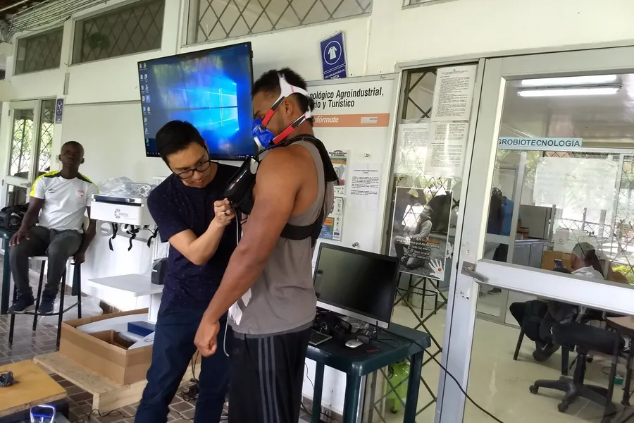
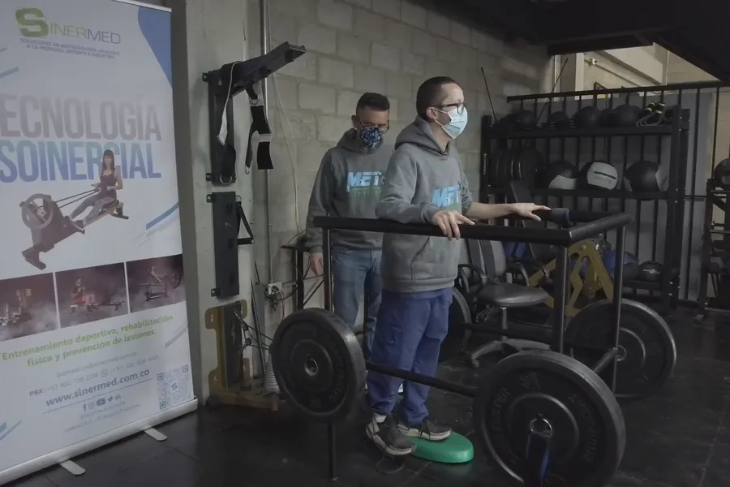
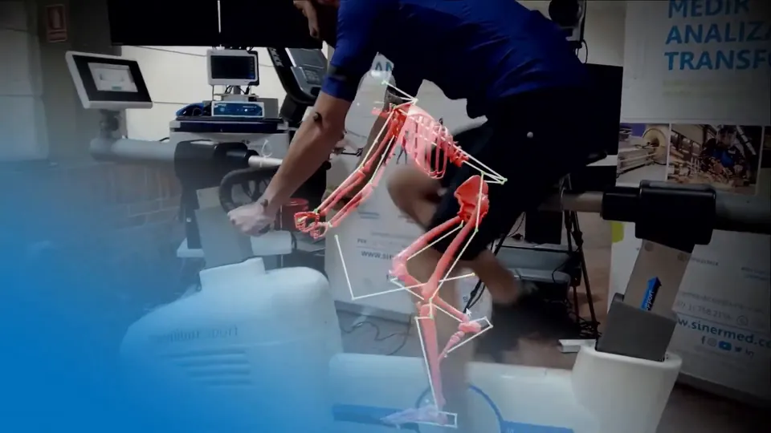
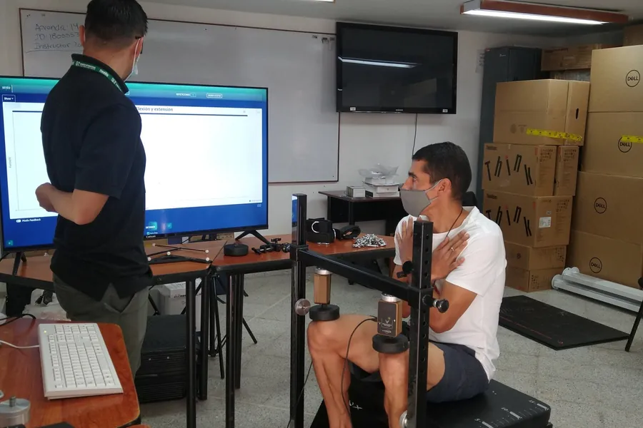
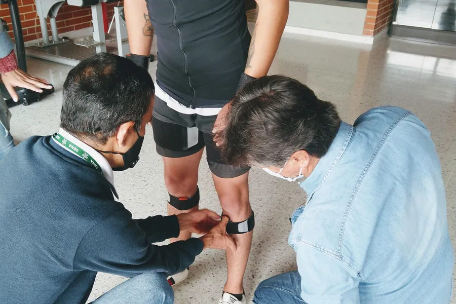
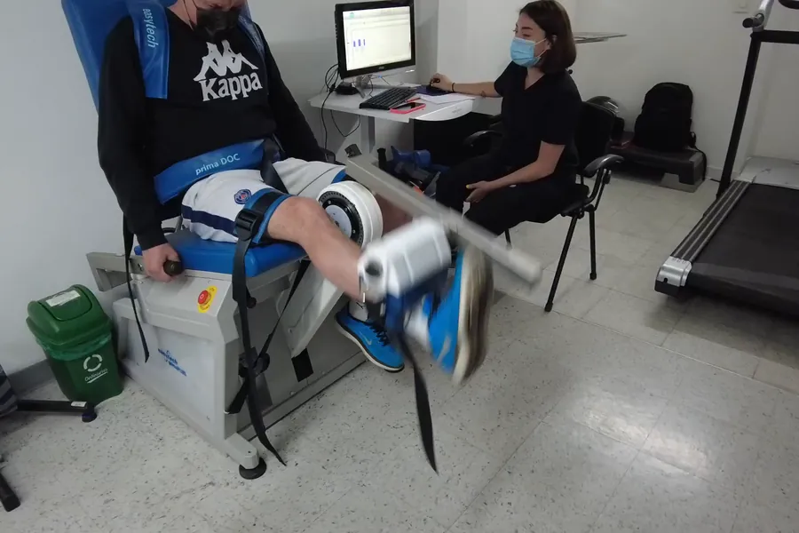
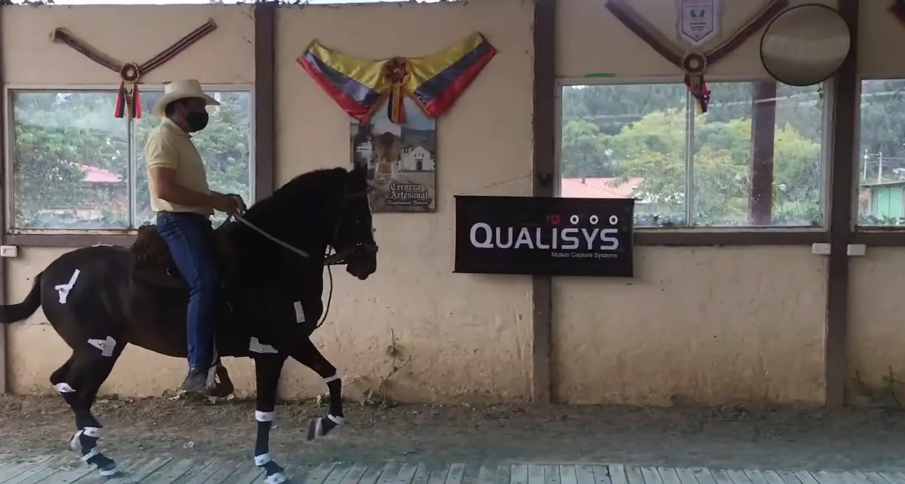
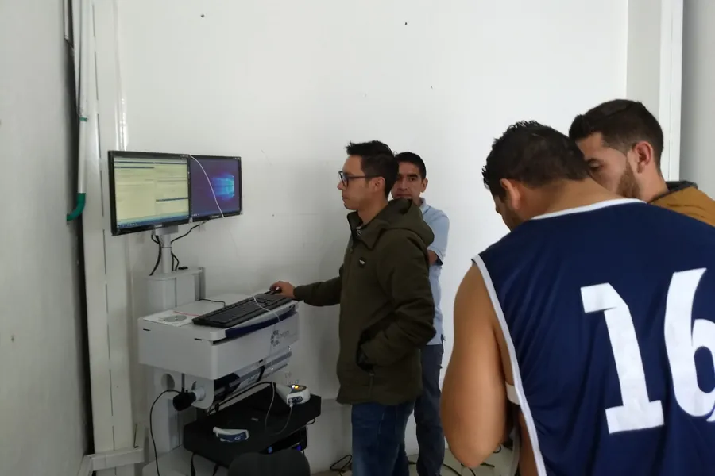

Confían en Sinermed: Comité Olímpico Colombiano, Ministerio del Deporte, Federación Colombiana de Fútbol, Ejército Nacional, Hospital Universitario Nacional, SENA
, Universidad de los Andes, Universidad Javeriana, Universidad El Bosque, EAFIT, Universidad de La Salle, Santo Tomás, INDER Medellín, IDRD, Indeportes Antioquia, Centro Médico Deportivo MET
y CONFA
.
-
SENA Apartadó, Antioquia
Laboratorio de valoración cardiopulmonar y biomecánica, con ergoespirómetros instalados y capacitación al equipo.
-

SENA Caldas, proyecto SENNOVA
Captura de movimiento, ergoespirometría, medición de fuerza y presión plantar en un mismo laboratorio.
-

SENA Kennedy, Bogotá
Laboratorio de captura y análisis de movimiento para el centro de formación en actividad física y cultura.
-
Centro Médico Deportivo MET, Chía
Área de entrenamiento, rehabilitación y readaptación isoinercial, con capacitación de un experto de la marca.
-

Centro Médico Deportivo MET, Bogotá
Suministro e instalación de dinamometría isocinética para rehabilitación y entrenamiento.
-

Criadero El Diamante
Captura de movimiento para analizar las modalidades de paso del caballo criollo colombiano.
-

SENA Vélez, Santander
Cicloergómetros y ergoespirómetros para el laboratorio de valoración cardiopulmonar.
También: laboratorio de biomecánica del Centro de Alto Rendimiento en Bogotá, análisis de postura en la Universidad El Bosque y rehabilitación cardíaca en CONFA, Caldas.